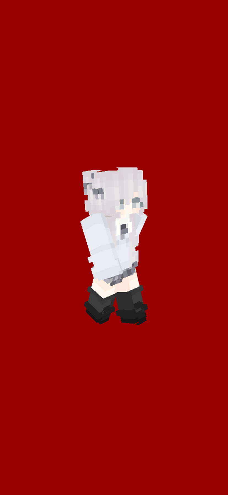

Milkmappers是一个Minecraft地图制作组。地图下载请点击这里。
基本信息
创立者: xtsdcb69
成立日期: 2021.2.15
成员 (6): xtsdcb69, Re6, tuffkotte, sky_bow_chrs, CY_wl, Chen_Mo_cht
成员B站UID + 简短介绍 + 彩蛋
xtsdcb69 [XTS]


加入Milkの闯关造图组 (Milkmappers) 时间: 2021.2.8
xtsdcb69 (人称小天使，但他本人从没用过这个称呼) 今年13，是Puremilk中存活时间最长的的一个管理。他在2020.3.12 (一周目早中期) 进入了Puremilk生存服，然后在2020.3.21就当上了管理。
最初，牛奶的意见是xts只是一个添加白名单的管理。结果后来由于技术问题没法单独给权限，于是就干脆全给了。
他也是一个B站UP主，是Milkmappers成员中最精通命令的，目前开发过自制UHC (1, 2, 3) 以及King Game, 均为数据包小游戏。
他没有在任何视频中开过麦，但在与其他Puremilk玩私人服务器时开过。
Re6 [SF]
加入Milkの闯关造图组 (Milkmappers) 时间: 2021.2.8
Re6, 即剑鱼 (aka. Im_SwordFish, Dead_SwordFish)，年龄大约在14附近，是在一周目后期加入了服务器。
他是Milkmappers成员中唯一一个没有Minecraft正版的，不过他说他生日在三月，今年生日礼物就是正版。
在独自一人做完Milkの闯关前三关后，xts就接手了地图创作，然后开了服一起造图，成立了Milkmappers.
从Milkの闯关的制作来看，他基本上只会用say来与玩家进行对话。在某次xts开他几年前做的跑酷图时，xts发现他几年前也是只会用say. 不过剑鱼至少比当年的xts好在会通过改命令方块的名字来修改say前面的那个@.
tuffkotte [TUFF]


加入Milkの闯关造图组 (Milkmappers) 时间: 2021.2.8
tuffkotte, 又名默默，和xts一样也是一个B站UP主，是一周目中期玩家。他是Milkmappers成员中年龄最小的，今年12左右，但也是PvP技术最高的，只要去玩Hypixel，基本上不是玩Bed Wars就是Sky Wars. 他也经常叫xts开PvP游戏。
他也是Milkmappers成员中唯一一个没有公开开过麦的，目前仅有一段他在与xtsdcb69私聊时开麦的珍贵影像。
他曾经立下过一个dllx (倒立拉稀) 的梗，但结果显而易见，他连麦都没开过，还会去做这种事?
在2021年寒假的某一天，他和xts (被迫) 玩黑杰克游戏。他又一次立下dllx的梗: 如果这局游戏他输了，他就dllx.
既然是他被迫和xts一起玩的，也就是说xts知道这方面他比默默好。于是，默默输了。
sky_bow_chrs [SKB]


加入Milkの闯关造图组 (Milkmappers) 时间: 2021.2.13
sky_bow_chrs, 人称天弓，大概17岁，是二周目中期玩家。他也是B站UP主，基本上每期视频都开麦。
他发视频比较集中，经常都是隔了一段时间后就突然高产。他的视频封面都比较好 (至少比Milkmappers其他成员都要好)，不过同一系列的视频的封面大多是重复的。
在xts发现他的B站号时，xts正好在和默默聊天。于是，他就插了这样一段话:
我比天弓好在哪: 粉丝多
天弓比我好在哪: 封面好
过了几十分钟，xts就把这一大段对话发到了群里。当时一帮人正好在牛奶一群语音，天弓看到后，就说了句"笑死我了"。
在xts给默默发了上面那段信息之后过了几分钟，xts就发现了天弓的英文简称: SB。于是，他就说只能叫天弓SKB了。不过，经常，在xts看到这个简称后，大概有一半的几率会读成Sky Block.
他还有一个大号: sky_bow_orange, 这个ID应该是来自他的B站ID"天弓之橙"，或者是他叫"天弓之橙"的原因。 不过，这个号被刷黑卡了。
CY_wl [CY]

加入Milkの闯关造图组 (Milkmappers) 时间: 2021.2.13
CY_wl, 中文称呼为重阳万灵 (初音未来)，年龄在18左右，是一周目早期玩家，退过4次群 (最近一次在2021年2月26日)。
他一旦进了语音，那么他说的话一般都是最多的。尽管语音只剩他一个人了，在他没有发现之前，也在那里自言自语。
以前在B站发过视频，后来就全删了。
Chen_Mo_cht [CM]


加入Milkの闯关造图组 (Milkmappers) 时间: 2021.2.13
Chen_Mo_cht, 即尘墨，是一周目后期玩家，年龄可能是在17左右，发过几个视频，然后就鸽了很久。的表情包基本上都和二次元女孩纸有关。
剑鱼曾经拒绝过他加入Milkの闯关造图组 (那时还没成立Milkmappers)，原因是人太多了。不过最后还是同意他加入了。
他加入造图组后，就马上对Milkの闯关的第四关进行了内饰加工。不得不说，还是挺好看的 (至少比其他人好)。在看到第5关的巨大工程量后，他就直接"吐了"。